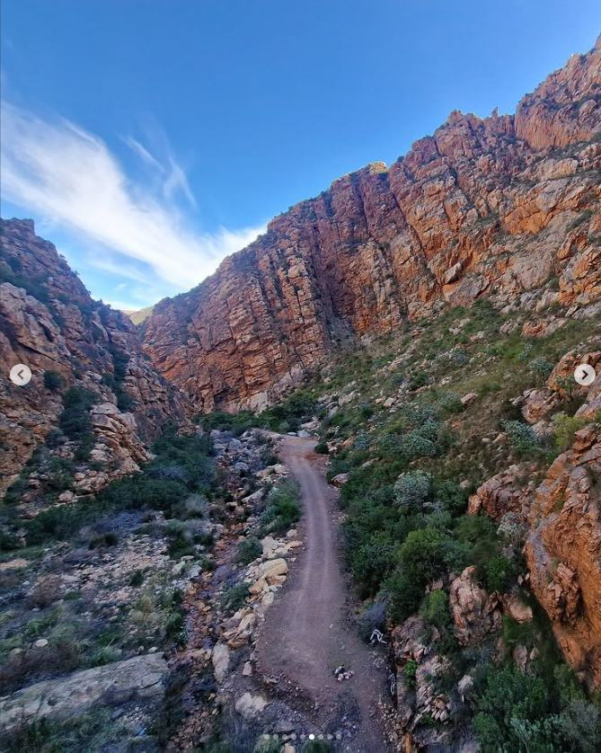
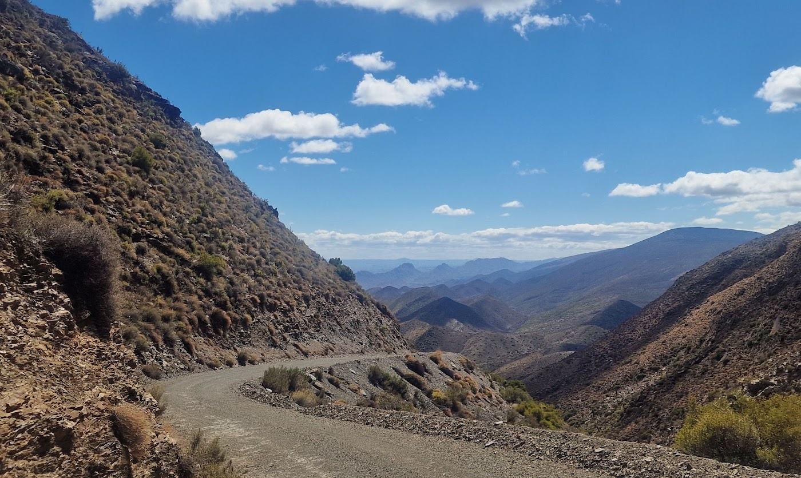

Riding the heart of the Klein Karoo
The landscape and rhythm of gravel riding around Ladismith, featured in Gravel Union CC.
The landscapes, people and moments that make riding here unforgettable.

The landscape and rhythm of gravel riding around Ladismith, featured in Gravel Union CC.

Breakfast on an olive farm, Seweweekspoort from above, rides with friends in Hoeko and the Fever Trail.
There is no better way to understand the Karoo than to ride it.